テキストウィジェット：マークとタグ
テキストウィジェットの最大の特徴は、特定の位置をマークしたり、特定の文字列にタグをつけ、フォントや色といった属性の変更やバインディングの設定が可能なことです。また、キャンバスウィジェットと同様に、テキストの中にウィジェットを表示することもできます。
●マーク
それではマークから説明しましょう。マークはテキストの位置を表す名前のことです。マークは文字自体につけられるのではなく、文字と文字の間に設定されます。このため、マークで指定した位置に文字列を挿入する場合はとても便利です。また、位置の指定にマークを使うこともできます。この場合、マークの直後の文字が操作対象となります。
マークの操作はウィジェットコマンド mark を使います。
| mark set 名前 位置 | マークの設定 |
| mark unset 名前 ... | マークの削除 |
| mark names | 定義されているマークをリストにして返す |
| mark gravity 名前 [指定] | マークのつき方を left と right で指定 |
| mark next 位置 | 位置より後にあるマークを返す |
| mark prev 位置 | 位置より前にあるマークを返す |
マークで指定した位置は、文字列の挿入や削除で変化することはありません。次の例を見てください。
.t0 mark set first 3.4
テキストウィジェット名を .t0 とし、3 行目の 4 文字目と 5 文字目の間にマーク first を設定します。この状態で、3 行目の先頭文字を削除すると、first は 3.4 ではなく 3.3 に変わります。
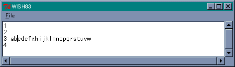 3.4 の位置にマーク first を設定。マークの位置に文字列を挿入する場合、マークは挿入した文字列の左右どちらかにつきます。ウィジェットコマンド mark gravity は、文字列を挿入したときのマークのつき方を指定します。left であれば挿入した文字列の左側に、right であれば右側にマークが設定されます。たとえば、マーク first が bc の間に設定されていて、この位置に 1234 という文字列を挿入します。
.t0 insert first 1234
すると、 文字列は b1234c となりますが、マークが左側につく場合は b と 1 の間にマークが設定されます。逆に、右側に付く場合は 4 と c の間に設定されます。デフォルトの設定は right です。
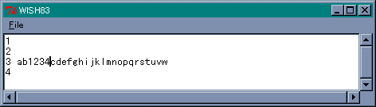 マークは 4 と c の間になる。したがって、もう一度 first に文字列 5678 を挿入すると、次のようになります。
.t0 insert first 5678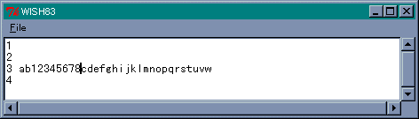 マークは 8 と c の間になる。
それから、特別なマークとしてカーソル位置を表す insert と、マウスカーソルが指す文字位置を表す current があります。たとえば、カーソルの位置に文字列を挿入したい場合は、次のように行います。
.t0 insert insert 文字列
最初の insert がウィジェットコマンドで、次がカーソルを表すマークです。これで指定した文字列がカーソル位置に挿入されます。
●タグ
テキストのタグは、キャンバスウィジェットのタグと同様に、指定した文字列に名前 (タグ名) をつける機能です。そして、タグごとにフォントや色などの表示属性やバインディングを設定することができます。この機能により、テキストウィジェットは単なるテキスト編集だけではなく、ある単語をクリックしたら別のテキストを表示する、といったハイパーテキストを構成することができます。Widget Tour にはデモプログラムが用意されているので、実際に試してみてください。
タグの操作はウィジェットコマンド tag で行います。フォント、色、アンダーラインなどの表示属性はオプションで設定します。tag には、タグの設定、削除、検索といった基本的な機能のほかに、オプションやバインディングの設定を行うことができます。
コマンドやオプションの詳細はヘルプを参照してもらうことにして、さっそく簡単な例題を示します。前回作成したテキストを表示するプログラムで、行番号を赤く表示してみましょう。行番号を表す文字列にタグ LINENUM を指定し、色をオプションで設定します。オプションは tag configure で設定します。
tag configure タグ名 オプション tag cget タグ名 オプション
ウィジェットコマンドと同じく、オプションの設定には configure を、値の取得には cget を使います。タグ LINENUM の設定は次のようになります。
.t0 tag configure LINENUM -foreground red
文字の色は今まで使ってきたウィジェットと同じく -foreground で指定します。また、-background で背景色も指定することができます。このオプションが指定されていると、-borderwidth でふちの幅を、-relief で形状を指定することができます。
行番号にタグを設定することはとても簡単です。ウィジェットコマンド insert でタグを指定するだけです。
insert 位置 文字列 タグ ...
タグを指定すると、挿入した文字列にそのタグが設定されます。したがって、前回作成した insert_number を次のように修正するだけです。
リスト : 行番号の挿入
proc insert_number {} {
global line_count
for {set i 1} {$i < $line_count} {incr i} {
.t0 insert $i.0 [format "%6d:" $i] LINENUM
}
}
このように、文字列の後ろにタグ名 LINENUM を指定します。これで行番号が赤く表示されます。
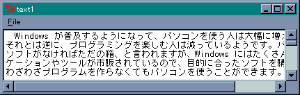 テキストを表示する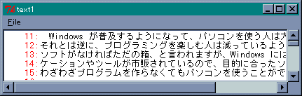 行番号を赤く表示する
テキストウィジェット：タグの例題 (フォント、サイズ、色の変更)
今回はもう少し複雑な例題として、マウスで色やフォントを設定するプログラムを作りましょう。テキストの表示はいままでのプログラムと同じですが、行番号を表示する機能は省いています。変更する文字列の指定は、テキストウィジェットの標準動作であるマウスをドラッグすることで行います。文字列を選択した状態で、マウスを右クリックすると、メニューで設定されているフォント、サイズ、色に変更します。
●メニューの設定
最初にメニューを設定します。
リスト : メニューの設定 (1) menu .m -type menubar . configure -menu .m .m add cascade -label "File" -under 0 -menu .m.m1 .m add cascade -label "Font" -under 0 -menu .m.m2 .m add cascade -label "Size" -under 0 -menu .m.m3 .m add cascade -label "Color" -under 0 -menu .m.m4 .m add command -label "Clear" -under 0 -command "clear_tag"
Font, Size, Color はそれぞれフォント、サイズ、色を指定するメニューです。Clear はタグを削除して文字列を元に戻すためのメニューです。文字列を元に戻す場合は、マウスではなく挿入カーソルで指定します。挿入カーソルの位置にあるタグを取得して、それを削除することで文字列の表示を元に戻します。
次はフォント、サイズ、色を設定するメニューです。
リスト : メニューの設定 (2)
menu .m.m2 -tearoff no
.m.m2 add radiobutton -label {ＭＳ 明朝} -variable font -value {ＭＳ 明朝}
.m.m2 add radiobutton -label {ＭＳ ゴシック} -variable font -value {ＭＳ ゴシック}
menu .m.m3 -tearoff no
.m.m3 add radiobutton -label 10 -variable size -value 10
.m.m3 add radiobutton -label 16 -variable size -value 16
.m.m3 add radiobutton -label 24 -variable size -value 24
.m.m3 add radiobutton -label 48 -variable size -value 48
menu .m.m4 -tearoff no
.m.m4 add radiobutton -label black -variable color -value black
.m.m4 add radiobutton -label red -variable color -value red
.m.m4 add radiobutton -label blue -variable color -value blue
.m.m4 add radiobutton -label green -variable color -value green
.m.m4 add radiobutton -label yellow -variable color -value yellow
チェックボタンを使ってフォント、サイズ、色を設定します。例題ということで、指定できるフォントは 2 種類としました。M.Hiroi が使っている Tcl/Tk では、フォント選択の専用ダイアログは用意されていません。実用的なツールを作る場合、個別のメニューで指定するよりも、専用のダイアログを作成した方がよいでしょう。まあ、そのうちに標準でサポートされるかもしれません。それから、メニューで使用する大域変数の初期化をお忘れなく。
●タグの定義
次はタグの定義です。
リスト : タグの定義
foreach f {{ＭＳ 明朝} {ＭＳ ゴシック}} {
foreach s {10 16 24 48} {
.t0 tag configure "$f $s" -font "\{$f\} $s"
}
}
foreach c {black red blue green yellow} {
.t0 tag configure $c -foreground $c
}
フォントとサイズはオプション -font でいっしょに設定されるので、「フォント名＋サイズ」をタグ名とします。このとき "$f $s" とすると、たとえば "ＭＳ 明朝 10" のように展開されます。タグ名はこれでもいいのですが、オプション -font でエラーになります。そこで、-font の指定では $f を { } で囲むことで、"{ＭＳ 明朝} 10" と展開されるようにします。カラーを指定するタグは簡単ですね。
●タグの設定
次は、マウスが右クリックされたときのバインディングを設定します。ドラッグで範囲が指定された場合、その文字列には sel というタグが設定されます。この文字列に対して、フォントと色を指定するタグを設定します。
タグの設定には tag add を使います。
tag add タグ名 開始位置 [終了位置]
開始位置から終了位置までの文字列にタグを設定します。終了位置を省略すると、開始位置にある文字にタグが設定されます。
タグの検索には、いくつかのコマンドが用意されています。
- tag names [位置]
指定した位置に設定されているタグをリストに格納して返す。位置が省略された場合は、テキストウィジェット全体に設定されているタグを返す。 - tag ranges タグ名
指定したタグの開始位置と終了位置をリストに格納して返す。タグが複数の文字列に設定されている場合は、それらをすべてリストに格納して返す。 - tag nextrange タグ名 位置 [位置]
tag prevrange タグ名 位置 [位置]
指定した位置より後 (nextrange) または前 (prevrange) で指定したタグを検索し、その開始位置と終了位置をリストに格納して返す。
プログラムは次のようになります。
リスト : タグの設定
bind .t0 <Button-3> {
global font size color
set r [.t0 tag ranges sel]
if {[llength $r] > 0} {
.t0 tag add "$font $size" [lindex $r 0] [lindex $r 1]
.t0 tag add $color [lindex $r 0] [lindex $r 1]
}
}
Tcl/Tk の出身地 UNIX では 3 ボタンマウスを使うことが多く、Button-2 は中ボタンを表します。右ボタンは Button-3 となります。ドラッグで選択した文字列の範囲は tag ranges sel で求めることができます。結果はリストに格納されて返されます。もしも、空リストであれば範囲は指定されていません。あとは、リストから開始位置と終了位置を取り出して、フォント用タグとカラー用タグを tag add を使って設定します。
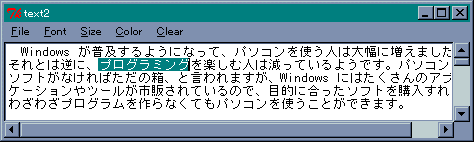 ドラッグで文字列を選択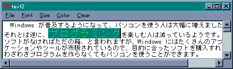 MS 明朝 16, green に変更
●タグのクリア
最後にタグをクリアするコマンドを作ります。
リスト : タグのクリア
proc clear_tag {} {
foreach n [.t0 tag names insert] {
set r [.t0 tag prevrange $n insert]
.t0 tag remove $n [lindex $r 0] [lindex $r 1]
}
}
挿入カーソルの位置には insert というマークが設定されています。位置の指定にはマークも使えるので、tag names insert で文字列に設定されているタグを求めることができます。この結果もリストに格納されて返されるので、foreach でひとつずつ取り出してタグをクリアします。タグの開始位置と終了位置は tag prevrange で求めることができます。カーソル位置に設定されているタグを削除するのですから、それより前にあるタグの開始位置を検索します。
タグの削除には二つのコマンドがあります
tag delete タグ名 ... tag remove タグ名 開始位置 [終了位置]
tag delete は指定したタグをテキストウィジェットから全て削除します。これに対し、tag remove は指定した位置や範囲にあるタグを削除します。このプログラムでは、tag remove で指定した範囲内のタグを削除すればいいでしょう。
これでプログラムは完成です。とても簡単に作ることができました。実際にプログラムを動かしてみてください。テキストウィジェットの能力の高さを実感できると思います。
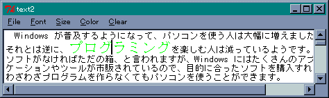 文字列にカーソルを合わせる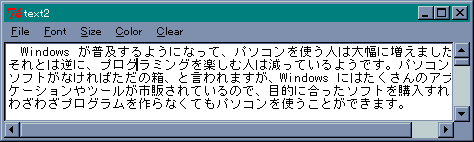 メニュー clear を選択すると元に戻る
●プログラムリスト
#
# フォント、サイズ、色を変更するサンプルプログラム
#
# Copyright (C) 2001 Makoto Hiroi
#
# ファイルを選んで表示する
proc load_file {} {
global image_data path_name
set filename [tk_getOpenFile -initialdir $path_name \
-filetypes {{{TextFiles} {.txt .doc}}}]
if [string compare $filename ""] {
set path_name [file dirname $filename]
# テキストをクリア
.t0 delete 1.0 end
# ファイルの読み込み
set f [open $filename]
while {![eof $f]} {
.t0 insert end [read $f 1024]
}
close $f
}
}
# タグをクリアする
proc clear_tag {} {
# カーソルポジションの位置を取得
foreach n [.t0 tag names insert] {
set r [.t0 tag prevrange $n insert]
.t0 tag remove $n [lindex $r 0] [lindex $r 1]
}
}
# ********** メニューの設定 **********
menu .m -type menubar
. configure -menu .m
.m add cascade -label "File" -under 0 -menu .m.m1
.m add cascade -label "Font" -under 0 -menu .m.m2
.m add cascade -label "Size" -under 0 -menu .m.m3
.m add cascade -label "Color" -under 0 -menu .m.m4
.m add command -label "Clear" -under 0 -command "clear_tag"
menu .m.m1 -tearoff no
.m.m1 add command -label "Open" -under 0 -command "load_file"
.m.m1 add separator
.m.m1 add command -label "Exit" -under 0 -command "exit"
menu .m.m2 -tearoff no
.m.m2 add radiobutton -label {ＭＳ 明朝} -variable font -value {ＭＳ 明朝}
.m.m2 add radiobutton -label {ＭＳ ゴシック} -variable font -value {ＭＳ ゴシック}
menu .m.m3 -tearoff no
.m.m3 add radiobutton -label 10 -variable size -value 10
.m.m3 add radiobutton -label 16 -variable size -value 16
.m.m3 add radiobutton -label 24 -variable size -value 24
.m.m3 add radiobutton -label 48 -variable size -value 48
menu .m.m4 -tearoff no
.m.m4 add radiobutton -label black -variable color -value black
.m.m4 add radiobutton -label red -variable color -value red
.m.m4 add radiobutton -label blue -variable color -value blue
.m.m4 add radiobutton -label green -variable color -value green
.m.m4 add radiobutton -label yellow -variable color -value yellow
# 画面の設定
option add *font "{ＭＳ ゴシック} 10"
text .t0 -xscrollcommand ".s0 set" -yscrollcommand ".s1 set" -wrap none
scrollbar .s0 -orient horizontal -command ".t0 xview"
scrollbar .s1 -command ".t0 yview"
grid .t0 -row 0 -column 0 -sticky nsew
grid .s0 -row 1 -column 0 -sticky ew
grid .s1 -row 0 -column 1 -sticky ns
# ウィンドウのリサイズに対応
grid columnconfigure . 0 -weight 1
grid rowconfigure . 0 -weight 1
# 外部変数の初期化
set font {ＭＳ ゴシック}
set size 10
set color black
set style normal
set path_name ""
# タグの設定
foreach f {{ＭＳ 明朝} {ＭＳ ゴシック}} {
foreach s {10 16 24 48} {
.t0 tag configure "$f $s" -font "\{$f\} $s"
}
}
foreach c {black red blue green yellow} {
.t0 tag configure $c -foreground $c
}
# バインド
bind .t0 <Button-3> {
global font size color
# 選択された領域は sel というタグがつく
set r [.t0 tag ranges sel]
if {[llength $r] > 0} {
.t0 tag add "$font $size" [lindex $r 0] [lindex $r 1]
.t0 tag add $color [lindex $r 0] [lindex $r 1]
}
}
テキストウィジェット：ウィジェットの表示
●コマンド window
テキストウィジェットはキャンバスウィジェットと同様に、テキストだけではなくほかのウィジェットも表示することができます。これにはコマンド window を使います。
- window create 位置 オプション
オプション -window で指定したウィジェットを表示する。 - window names
テキストウィジェットに表示されているほかのウィジェットをリストに格納して返す。 - window configure 位置 オプション
window cget 位置 オプション
オプションの設定 (configure) と値の取得 (cget) を行う。
コマンド window で使用するオプションを表に示します。
| -window | ウィジェット名 |
| -create | ウィジェットを生成するコマンド |
| -align | 上下方向の揃え指定 (base, top, bottom) |
| -stretch | 上下方向の引き延ばし |
| -padx,-pady | スペースの指定 |
●プログラムの改造
それでは、テキストにイメージを挿入できるように、前回作成したプログラムを改造してみましょう。メニュー Image で画像ファイルを選択し、カーソル位置にその画像を挿入します。
メニュー Image の設定は簡単です。次の１行を追加するだけです。
.m.add command -label "Image" -under 0 -command "insert_image"
画像を挿入する isert_image は次のようになります。
リスト : 画像の挿入
proc insert_image {} {
global image_path_name label_count
set filename [tk_getOpenFile -initialdir $image_path_name \
-filetypes {{{画像Files} {.gif .ppm}}}]
if {$filename != ""} {
set image_path_name [file dirname $filename]
image create photo i$label_count -file $filename
label .l$label_count -image i$label_count
.t0 window create insert -window .l$label_count -align baseline
incr label_count
}
}
画像ファイルの選択は画像ローダーと同じです。ただし、パスを格納する大域変数は、テキストファイルのパスと重複しないように名前を image_path_name に変更しています。挿入するイメージはひとつとは限らないので、イメージ名と表示するラベル名を変数 label_count で管理します。画像を挿入したら label_count を +1 することにより、異なったラベル名とイメージ名を作ることができます。ラベルを作成したら、window create でテキストウィジェットに表示します。表示位置はマーク insert で指定できるので簡単です。
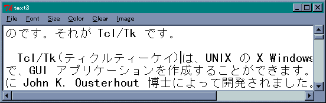 テキストを表示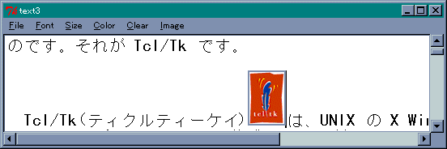 Tcl/Tk Logo を挿入
 テキストの編集
テキストの編集
ウィジェットを挿入したあとで、テキストを編集することはもちろん可能です。ウィジェットの前に文字を挿入すればウィジェットは後ろへ移動しますし、文字を削除すれば前の方へ移動します。挿入したウィジェットは、文字と同じ操作で削除することができます。
ところで、このままでは作成したテキストをセーブすることができません。テキストのほかに、タグやウィジェットなどの情報を別ファイルに書き出せば、設定したフォント、色、画像を保存することができます。これは、ウィジェットコマンド dump を使うことで実現できます。dump はウィジェット内の情報を出力するので、それを別ファイルに書き出せばいいわけです。まあ、どうせ保存するならば HTML 形式に変換した方がよいかもしれません。今回は dump コマンドの説明は割愛しますが、興味のある方はヘルプを参照して、セーブ機能を追加してみてください。